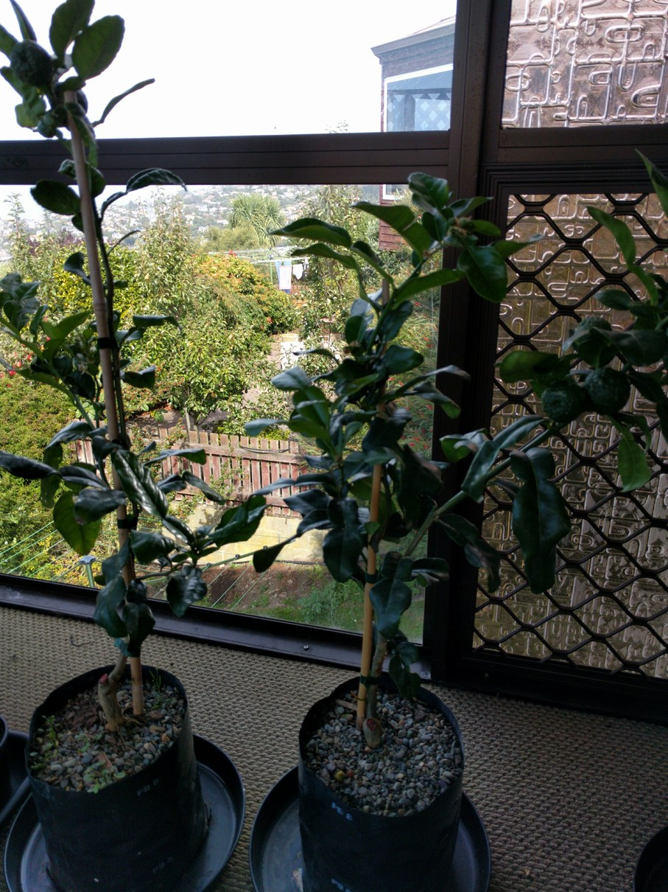

Info From Tag
- Essential ingredient in S.E. Asian cooking
- Attractive evergreen shrub
Citrus hystrix
A popular culinary citrus whose aromatic leaves are used extensively in Asian cooking. Forms an evergreen shrub with interesting dark green double leaves and rough, 'warty' inedible fruit.
- Full sun. Well drained, fertile soil
- Mild regions - will tolerate temps to around -2°C
- Water regularly during hot, dry spells
- Regular fertilising from spring to mid-summer
- 3m tall x 2m wide after 8 years unpruned
- Summer fruiting (inedible) but use leaves all year
- Essential ingredient for many Asian dishes
- Evergreen, suitable for container growing
